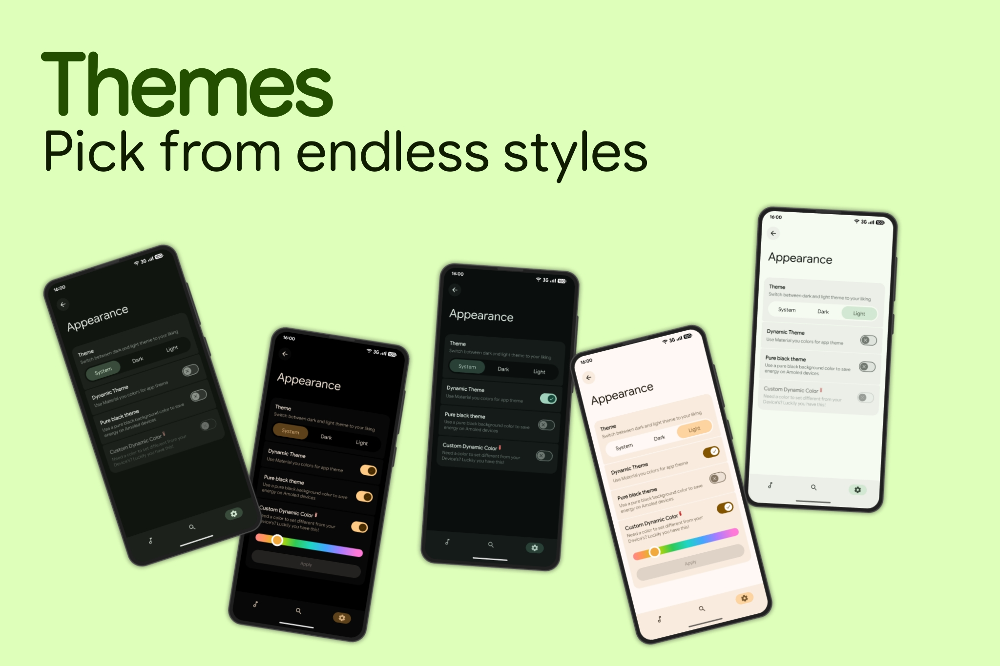
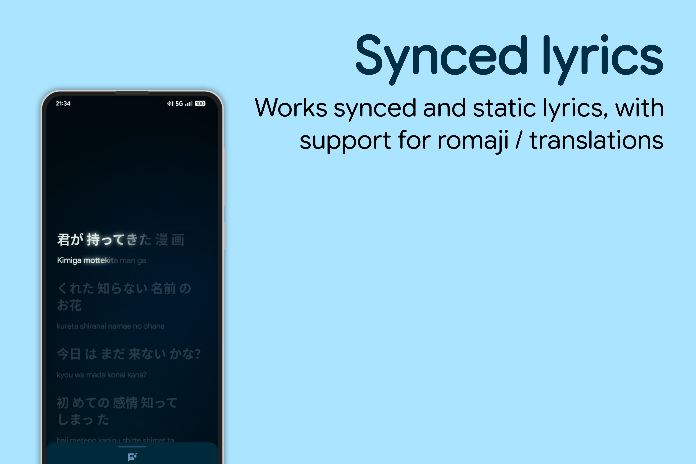
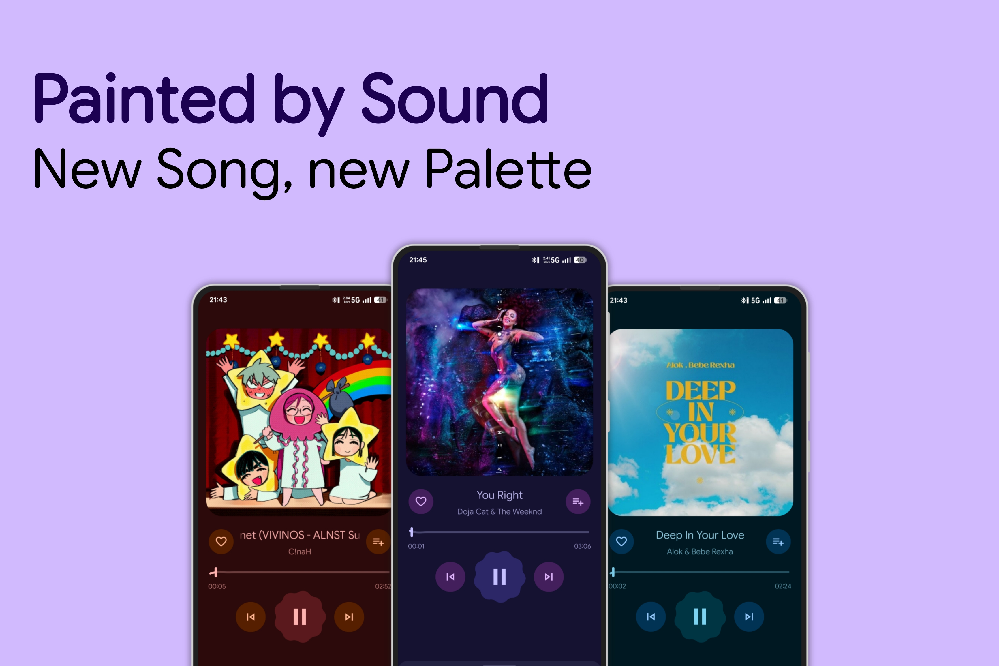

A Material 3 Expressive Music player for Android. Built to prove what pure Java and traditional XML layouts can still achieve in a modern, Compose-first ecosystem.



Media3 ExoPlayer based playback featuring background playback with notification controls and MediaSession integration.
Dynamic Now Playing UI tinted by album artwork colors. Includes a MotionLayout-driven bottom sheet player.
Predictive back animations everywhere. Custom framework animations ensure smooth and continuous navigation transitions throughout the app.
Built-in lyrics support with animated transitions and Romaji/translation lyrics support.
No ads, no tracking, and no cloud dependency. Scans local audio files stored on your device with fast indexing.
Minimum Requirements: Android 8.0 (API 26) or higher, local audio files, and a brain (for reporting bugs).
The app is still WIP and far away from a stable release. You might notice a lot of bugs, missing features, and some instability problems, but everything will be worked on in the near future.
Yes. Completely free. No ads, no subscriptions, no hidden nonsense.
No. Everything works fully offline and stays on your device.
It scans local audio files stored on your device. Nothing is uploaded anywhere.
Make sure storage permissions are granted and your audio files are in supported formats.
No. There is no tracking, analytics abuse, or data harvesting.
Your system’s battery optimization or OEM “power saving” probably killed it. Disable optimizations for XMusic.
Yes. Use GitHub Issues for bugs and feature requests, or join the Telegram community for discussion.
If you think this feature will be useful for a lot of people, feel free to suggest it via reaching to our Telegram Community.
You can tell.